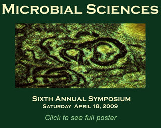
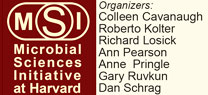

News Archives : 2009 : April 18th Symposium Explores the Richest Biological Reservoir on Earth: Microbial World
by Christy Herren
April 13, 2009
|  | |
Microbes (including bacteria, viruses, fungi, and protists) are ubiquitous on Earth and affect every part of our lives, yet they are mostly invisible. Microbial scientists believe the vast majority of microbes are still unknown to us. On Saturday, April 18, Harvard Microbial Sciences Initiative will host the Sixth Annual Microbial Sciences Symposium, an all-day event free and open to the public, to be held in the Radcliffe Gymnasium at the Radcliffe Institute for Advanced Studies on the Cambridge campus. Eight prominent microbial scientists haling from a wide variety of disciplines are invited to share their investigations into these enigmatic microbes. This event will “stimulate discussion among members of the scientific community and help strengthen integrative science programs,” says Kolter.
The Symposium is the largest and most visible event sponsored by the Microbial Sciences Initiative (MSI) at Harvard, an interdisciplinary program focused on understanding the microbial world. Co-directed by Colleen Cavanaugh (OEB) and Roberto Kolter (Microbiology and Molecular Genetics, HMS), the MSI links researchers in FAS with SEAS, Harvard Medical School, and Harvard Public School of Health.
The Symposium topics reflect the enormous value MSI places on interdisciplinary research spanning fields of molecular biology, engineering, physics, oceanography, evolutionary biology, environmental microbiology and microbial ecology.
